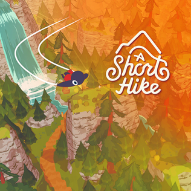

An Achievable Open World - A Short Hike
Wed Jul 31 2024 17:00:00 GMT-0700 (Pacific Daylight Time)
Expect spoilers. This article takes a look at A Short Hike's game design. If you don't want the game spoiled, stop reading.
I enjoy playing competitive multiplayer video games, and it's been that way for the majority of my life. However, recently I decided to explore some single player games as a way for me to decompress for fifteen or thirty minutes after the work day. It's more relaxing than the alternative, and provides a lot of insight into what good (and bad) design decisions look like.
I didn't want to pick up an AAA game with over 30 hours of gameplay because that seemed daunting. I was looking for something small, which has the added benefit of usually being more provocative and innovative, perhaps because most small games are made by independent developers. I landed on a perfect title: "A Short Hike" by Adam Robinson Yu (adamgryu online). The most important thing that stood out to me as I finished it was how it made an obviously finite game seem like an intentional and achievable open world.
A Short Hike

You are a bird visiting a national park on an island, and you decide you are going to hike to the top of Hawk's Peak. The premise is simple, and the game feels tight. What I mean is that, through clever design, I was exposed to the mechanics necessary to explore the world without being told explicitly when to use them. Players solve the puzzles laid out in front of them; The developers solve the larger puzzle of helping the player understand the set of their abilities and their interactions without the need for exposition. The game does not give the player hard, illogical boundaries. Instead, the island is architected such that as I played and gained more abilities, I realized I could go back and explore that which I was unable to previously.
Before going further, what does "open world" mean? Open world games are loosely defined as games that aren't split into individual levels with a specific order. Instead, the player can explore a large portion of the game space in whatever way they see fit. The narrative still progresses in a mostly predetermined order and does put some limits on what the player is able to do, but otherwise they are left to their own devices. Many games have built immersive open worlds (Breath of The Wild comes to mind), but a common pitfall for many is in the design of content that isn't the main narrative. It is time consuming (and expensive) to craft whole new experiences for every side quest available to the player. To alleviate this, procedural generation (read: code stuff) and other techniques are used to create content that appears unique without needing brand new art, logic, etc. However, this only goes so far — players can tell the side content is hollow after experiencing it a few times. The challenge of large open world games is striking the balance between hand-crafted intentional design and procedural design, to make every aspect of the world worth exploring.
With this definition, A Short Hike fits the category of open world. But what makes it "achievable?" To me, it's:
- The developers can create all the content for it without relying on gimmicks to inflate the time spent playing without meaningful reward (i.e. procedurally generated fluff).
- The player thinks it is well worth their time to explore beyond the game's main narrative because the other content feels meaningful.
A Short Hike limited it's own scope from the outset, which allowed the developers to craft every experience and interaction uniquely using the same mechanics that were required to reach the peak. One of the side quests taught me how to cover more ground on the island faster, which was not required to reach the peak, but made the rest of my island exploration much easier. That's the kind of reward the incentivizes a player to continue talking to every character and walking off the main path. Other experiences were less directly useful, like learning to fish, but it fit the game's aesthetic very well: a calm and cozy way to pass the time. Both of these side quests were short enough to make them worth doing, and despite the different outcomes, I felt good having done them.
I do not believe the game would fit my definition of achievable, however, if the main character movement loop was obtuse. In this case, A Short Hike knocked it out of the park. The variations in movement qualities were strung together in such a way that the very act of traversing the island was entertaining. I spent a lot of time combining running, jumping, gliding, and diving in different ways just because the movement itself was entertaining.
Through a high quality movement system and a well-defined and communicated (to the player) scope, A Short Hike manages to create a world that feels as good to explore as it does to complete. The creator did a wonderful in-depth breakdown of the development process at GDC, which you can check out here.